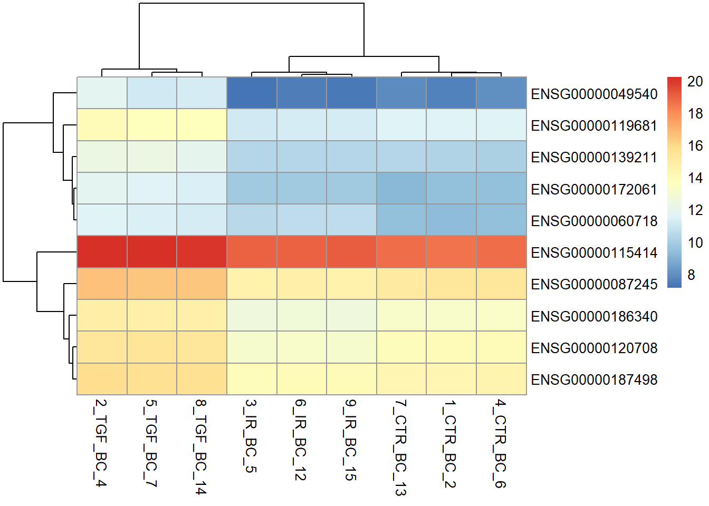
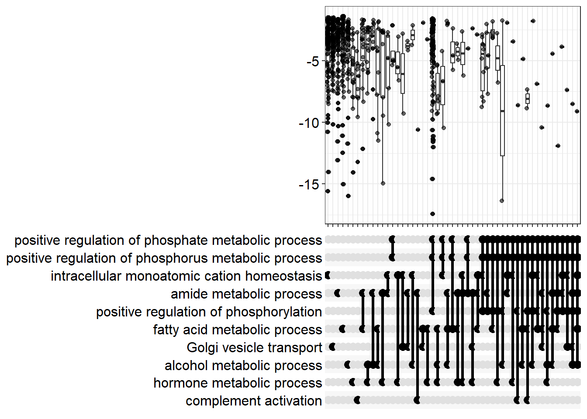
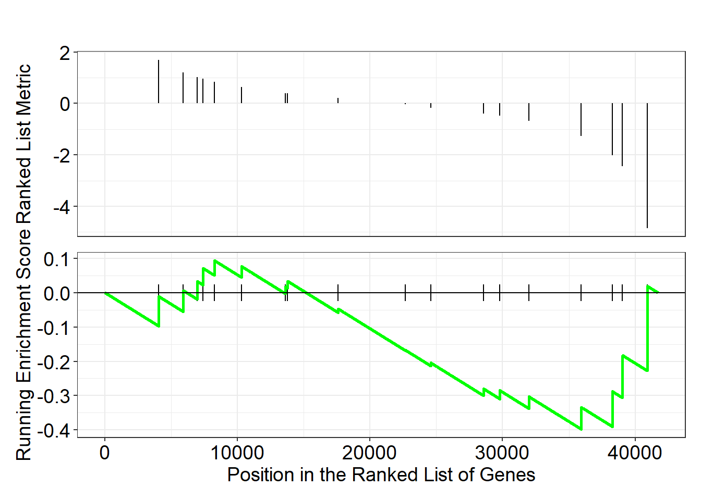

source("https://raw.githubusercontent.com/markdunning/markdunning.github.com/refs/heads/master/files/training/bulk_rnaseq/install_bioc_packages.R")Introduction to RNA-Seq - Part 3
Overview
Further exploration of differential expression followed by identifcation of biological pathways of interest
Quick Start
This section follows on from Part 1 and Part 2 where we saw how to import raw RNA-seq counts into DESeq2, perform some quality assessment and then differential expression. Several packages are required, which can be downloaded with this code:-
The following will also assume you have created a DESeq2 object in a folder called Robjects in your working directory. This can be downloaded with the following.
dir.create("Robjects/",showWarnings = FALSE)
download.file("https://github.com/markdunning/markdunning.github.com/raw/refs/heads/master/files/training/bulk_rnaseq/dds.rds",destfile = "Robjects/dds.rds")Differential expression with DESeq2
In Part 2 we dissected the DESeq workflow for differential expression in some detail. We also created a data frame for “annotating” the results with biological identifiers that are more recognisable.
library(org.Hs.eg.db)
anno <- AnnotationDbi::select(org.Hs.eg.db,keys=rownames(dds),
columns=c("SYMBOL","GENENAME"),
keytype="ENSEMBL")
# Have a look at the annotation
head(anno) ENSEMBL SYMBOL
1 ENSG00000000003 TSPAN6
2 ENSG00000000005 TNMD
3 ENSG00000000419 DPM1
4 ENSG00000000457 SCYL3
5 ENSG00000000460 FIRRM
6 ENSG00000000938 FGR
GENENAME
1 tetraspanin 6
2 tenomodulin
3 dolichyl-phosphate mannosyltransferase subunit 1, catalytic
4 SCY1 like pseudokinase 3
5 FIGNL1 interacting regulator of recombination and mitosis
6 FGR proto-oncogene, Src family tyrosine kinaselibrary(DESeq2)
library(dplyr)
library(ggplot2)
de_condition <- DESeq(dds)
results_annotated <- results(de_condition,
contrast = c("condition", "TGF", "CTR"),
tidy = TRUE) %>%
left_join(anno, by = c("row" = "ENSEMBL")) %>%
filter(!duplicated(row)) %>%
arrange(padj) %>%
dplyr::select(-lfcSE)
results_annotated %>%
slice_head() row baseMean log2FoldChange stat pvalue padj
1 ENSG00000119681 6471.706 2.372065 33.52033 2.43726e-246 4.371957e-242
SYMBOL GENENAME
1 LTBP2 latent transforming growth factor beta binding protein 2Filtering the differential expression results
Why are some adjusted p-values “NA”?
DESeq2 has already done some kind of processing on the results to exclude genes with low expression level across the dataset that are probably unreliable. The genes it filters out (those that have NA adjusted p-value) tend to have a lower value of baseMean
If we think this behaviour isn’t desirable, we can set the argument independentFiltering = FALSE in results
results_annotated %>%
ggplot(aes(x = is.na(padj), y = baseMean)) + geom_boxplot() + scale_y_log10()Warning in scale_y_log10(): log-10 transformation introduced infinite values.Warning: Removed 16194 rows containing non-finite outside the scale range
(`stat_boxplot()`).
Shrinking the log fold-changes
When we made the MA-plot in the previous section we saw a fanning effect at lower expression levels. Creates much cleaner, less noisy MA plots and heatmaps. A technique called “shrinkage” helps to address this as the “shrunken” log fold-change is a better measure of biological magnitude for ranking genes
Log fold-change shrinkage, implemented in DESeq2 via the lfcShrink() function, uses a statistical technique called Bayesian shrinkage (or an Empirical Bayes approach) to address this.
It works by:
“Borrowing” Information: It assumes that most genes are not differentially expressed (i.e., most true LFCs are near zero).
“Shrinking”: For genes with low counts (low confidence in the LFC), it shrinks their estimated LFC closer to zero.
Leaving Alone: For genes with high counts (high confidence in the LFC), the shrinkage effect is minimal, leaving the raw LFC largely untouched.
resultsNames(de_condition)[1] "Intercept" "condition_IR_vs_CTR" "condition_TGF_vs_CTR"results_final <- lfcShrink(de_condition, coef = 3)using 'apeglm' for LFC shrinkage. If used in published research, please cite:
Zhu, A., Ibrahim, J.G., Love, M.I. (2018) Heavy-tailed prior distributions for
sequence count data: removing the noise and preserving large differences.
Bioinformatics. https://doi.org/10.1093/bioinformatics/bty895results_finallog2 fold change (MAP): condition TGF vs CTR
Wald test p-value: condition TGF vs CTR
DataFrame with 57914 rows and 5 columns
baseMean log2FoldChange lfcSE pvalue padj
<numeric> <numeric> <numeric> <numeric> <numeric>
ENSG00000000003 1430.562846 -0.237256214 0.0803547 0.00164531 0.00906995
ENSG00000000005 0.113566 -0.000790077 0.2366069 0.98271709 NA
ENSG00000000419 1790.537536 -0.124931105 0.0952624 0.15063862 0.30807839
ENSG00000000457 640.692302 -0.272618872 0.1122208 0.00631933 0.02685529
ENSG00000000460 206.179026 0.115024336 0.1370301 0.30744046 0.50350287
... ... ... ... ... ...
ENSG00000284744 8.307038 -0.01672418 0.227751 0.793565 NA
ENSG00000284745 0.000000 NA NA NA NA
ENSG00000284746 0.101097 -0.00725327 0.236624 0.796900 NA
ENSG00000284747 28.783710 -0.06640128 0.219111 0.507490 0.689074
ENSG00000284748 0.548323 0.00647730 0.236572 0.830517 NALet’s remind ourselves of the MA- plot of the raw differential expression results
results_raw <- results(de_condition)
plotMA(results_raw)
Looking at the “shrunken” results
plotMA(results_final)The shrinkage technique will only change the log\(_2\) fold-changes and not the adjusted p-values. The purpose of shrinkage is to make the magnitude of the effect reliable for ranking genes, visualizing them in an MA plot, and filtering based on a minimum LFC threshold (e.g., \(|\text{LFC}| > 1\)).
results_final <- as.data.frame(results_final) %>%
tibble::rownames_to_column("ENSEMBL") %>%
left_join(anno) %>%
filter(!duplicated(ENSEMBL)) %>%
arrange(padj) Joining with `by = join_by(ENSEMBL)`Heatmaps
You may have already seen the use of a heatmap as a quality assessment tool to visualise the relationship between samples in an experiment. Another common use-case for such a plot is to visualise the results of a differential expression analysis. Although ggplot2 has a geom_tile function to make heatmaps, specialised packages such as pheatmaps offer more functionality such as clustering the samples.
The counts we are visualising are the variance-stablised counts, which are more appropriate for visualisation.
Here we will take the top 10 genes from the differential expression analysis and produce a heatmap with the pheatmap package. We can take advantage of the fact the our counts table contains Ensembl gene names in the rows. Standard subset operations in R can then be used.
The default colour palette goes from low expression in blue to high expression in red, which is a good alternative to the traditional red/green heatmaps which are not suitable for those with forms of colour-blindness.
# pheatmap is a specialised package to make heatmaps
library(pheatmap)
top_genes <- dplyr::slice(results_annotated, 1:10) %>% pull(row)
vsd <- vst(dds)
# top_genes is a vector containing ENSEMBL names of the genes we want to see in the heatmap
pheatmap(assay(vsd)[top_genes,])
The heatmap is more informative if we add colours underneath the sample dendrogram to indicate which sample group each sample belongs to. This we can do by creating a data frame containing metadata for each of the samples in our dataset. With the DESeq2 workflow we have already created such a data frame. We have to make sure the the rownames of the data frame are the same as the column names of the counts matrix.
sampleInfo <- as.data.frame(colData(dds)[,c("condition","Treated")])
pheatmap(assay(vsd)[top_genes,],
annotation_col = sampleInfo,
scale="row")Any plot we create in RStudio can be saved as a png or pdf file. We use the png or pdf function to create a file for the plot to be saved into and run the rest of the code as normal. The plot does not get displayed in RStudio, but printed to the specified file.
png("heatmap_top10_genes.png",width=800,height=800)
pheatmap(assay(vsd)[top_genes,],
annotation_col = sampleInfo)
# dev.off()There are many arguments to explore in pheatmap. For example, we might want to use a specific order to the rows and columns rather than using clustering. A useful option is to specific our own labels for the rows (genes). The default is to use the rownames of the count matrix. In our cases these are Ensembl IDs and not easy to interpret.
N <- 50
gene_labels <- dplyr::slice(results_annotated, 1:N) %>% pull(SYMBOL)
pheatmap(assay(vsd)[top_genes,],
annotation_col = sampleInfo,
labels_row = gene_labels,
scale="row")Given the nature of how the genes were selected for the heatmap, we shouldn’t be surprised by the good separation that it demonstrates.
Exercise
- Produce a heatmap using the top 30 genes with the most extreme log2 Fold-Change
- HINT: The
absfunction can be used to convert all negative values to positive.
- HINT: The
- Label the heatmap with the gene
SYMBOLof the genes - Is this heatmap as effective as separating the samples into groups?
Pathways analysis
In this section we move towards discovering if our results are biologically significant. Are the genes that we have picked statistical flukes, or are there some commonalities.
There are two different approaches one might use, and we will cover the theory behind both.
Threshold-based Gene Set Testing
For a particular pathway we need to calculate how many genes were identified as differentially-expressed and compare to how many we would be expect by chance. Or in other words, if we repeatedly generated a list of differentially-expressed genes at random how many genes from this pathway would be expect to see.
For the ECM pathway we can extract all genes as follows:-
## The pull function from dplyr is used to extract a particular column
library(org.Hs.eg.db)
pathway_genes <- AnnotationDbi::select(org.Hs.eg.db,
keys = "GO:0030198",
keytype = "GO",
columns="ENSEMBL") %>% pull(ENSEMBL)'select()' returned 1:many mapping between keys and columnsWe can then annotate each gene in our results according to whether it belongs to this pathway, and whether it is differentially-expressed.
go_table <- mutate(results_annotated,
inPathway = row %in% pathway_genes,
isDE = padj < 0.05 & abs(log2FoldChange) > 1)
go_table %>%
slice_head() row baseMean log2FoldChange stat pvalue padj
1 ENSG00000119681 6471.706 2.372065 33.52033 2.43726e-246 4.371957e-242
SYMBOL GENENAME inPathway
1 LTBP2 latent transforming growth factor beta binding protein 2 FALSE
isDE
1 TRUECross-tabulating the two new columns gives a basis for a statistical test
table(go_table$inPathway, go_table$isDE)
FALSE TRUE
FALSE 31080 545
TRUE 115 20The Fisher’s exact test or chi-squared test (as seen here) can then be used
chisq.test(table(go_table$inPathway, go_table$isDE))Warning in chisq.test(table(go_table$inPathway, go_table$isDE)): Chi-squared
approximation may be incorrect
Pearson's Chi-squared test with Yates' continuity correction
data: table(go_table$inPathway, go_table$isDE)
X-squared = 124.47, df = 1, p-value < 2.2e-16In reality it would be impractical to test all possible pathways in this manner, so there are a number of Bioconductor packages that automate the process
Analysis with clusterProfiler
clusterProfiler is a Bioconductor package for over-representation analysis. It’s main advantage is that it provides some nice visualisation methods.
The main function is enrichGO which requires the IDs of genes found to be differentially-expressed (sigGenes) and the IDs of all genes in the dataset (universe). It uses the org.Hs.eg.db package to map between gene names and biological pathways.
library(clusterProfiler)
universe <- results_annotated %>% pull(row)
sigGenes <- results_annotated %>%
filter(padj < 0.05) %>% pull(row)
enrich_go <- enrichGO(
gene= sigGenes,
OrgDb = org.Hs.eg.db,
keyType = "ENSEMBL",
ont = "BP",
universe = universe,
qvalueCutoff = 0.05,
readable=TRUE
)The result of enrichGo can be turned into a data frame for easier interpretation.
enrich_go %>% data.frame %>%
slice_head() ID Description GeneRatio
GO:2001233 GO:2001233 regulation of apoptotic signaling pathway 164/4221
BgRatio RichFactor FoldEnrichment zScore pvalue p.adjust
GO:2001233 398/18429 0.4120603 1.799066 8.78405 1.565104e-16 9.85546e-13
qvalue
GO:2001233 6.741479e-13
geneID
GO:2001233 MMP2/CTSC/PTGS2/HGF/INHBA/EYA4/BDKRB2/NRG1/SFRP1/CLU/UNC5B/PPARG/NR4A2/CD44/TLR4/LGALS3/MAZ/PPP2R1B/ITGA6/NUPR1/PMAIP1/BMP4/LRRK2/FGF10/IL1B/DDIT3/TNFRSF12A/SERINC3/CAV1/TMBIM6/BDNF/BOK/CFLAR/IER3/TNFSF15/ATF4/CSF2/IGF1/DDX3X/FAS/SKIL/PML/ACSL5/G0S2/BBC3/KLF4/SGK3/IL1A/ICAM1/ARHGEF2/PYCR1/FGF2/NCK1/WNT16/RRM2B/CREB3L1/IVNS1ABP/NFE2L2/STRADB/ATF3/TNFSF10/HSPB1/FYN/GDNF/TRIM32/BAK1/CYLD/PTTG1IP/ACAA2/HERPUD1/SIAH2/VNN1/NOC2L/TMEM161A/VDAC2/DNAJA1/TP53/PIAS4/THBS1/TNFSF14/TAF6/HMOX1/BID/EIF2AK3/WNT5A/CTH/PTPRC/PCGF2/RBCK1/MARCHF7/HYOU1/CCAR2/RPS6KB1/MEIS3/RB1CC1/PLAUR/GCLM/SRPX/HIF1A/PAK2/MDM2/SERPINE1/TPT1/PTPN1/FADD/BCL2/URI1/TMEM14A/PPIF/USP15/TPD52L1/MYC/GHITM/EIF5A/ACKR3/TRAP1/USP47/ITPRIP/CXCL12/SYVN1/RELA/CTSH/BAX/ENO1/HMGB2/APP/PIK3CB/RPS3/NME5/SLC25A5/DDIAS/PYCARD/PPP1CA/NFATC4/KDM1A/TRAF2/BAD/TGFBR1/SLC25A6/MIF/NF1/MAPK9/MSX1/DEDD2/AKT1/BAG5/NOL3/PLEKHF1/SEPTIN4/FIS1/CD74/SOD1/SRC/SFRP2/NRP1/BCLAF1/PRELID1/RTKN2/JAK2/SCG2/LMNA/HDAC1/SNAI1/OPA1
Count
GO:2001233 164A dot plot can show us the most enriched pathways, and the size of each.
dotplot(enrich_go,showCategory=20)Relationships between the identified categories can be found using emapplot.
enrich_go <- enrichplot::pairwise_termsim(enrich_go)
emapplot(enrich_go)Warning: Using `size` aesthetic for lines was deprecated in ggplot2 3.4.0.
ℹ Please use `linewidth` instead.
ℹ The deprecated feature was likely used in the ggtangle package.
Please report the issue to the authors.Overlaps between gene sets can also be visualised using an “Upset plot” - an alternative to a venn diagram.
enrichplot::upsetplot(enrich_go)Warning: `aes_()` was deprecated in ggplot2 3.0.0.
ℹ Please use tidy evaluation idioms with `aes()`
ℹ The deprecated feature was likely used in the enrichplot package.
Please report the issue at
<https://github.com/GuangchuangYu/enrichplot/issues>.Gene set enrichment analysis (GSEA)
An appealing feature of the GSEA method is that it does not require us to impose arbitrary cut-offs on the dataset to decide what is differentially-expressed or not. The steps in producing the input required for GSEA are i) retrieving the ranked statistics ii) naming each one according to a chosen identifier (ENSEMBL or ENTREZID for example).
The clusterProfiler package also includes an implementation of the GSEA algorithm, and the function works in much the same way as enrichGO from above.
ranked_genes <- results_annotated %>%
arrange(desc(stat)) %>%
filter(!is.na(stat))
geneList <- pull(ranked_genes, stat)
names(geneList) <- pull(ranked_genes, row)
gse_GO <- gseGO(geneList = geneList,
OrgDb = org.Hs.eg.db,
ont = "BP",keyType = "ENSEMBL")using 'fgsea' for GSEA analysis, please cite Korotkevich et al (2019).preparing geneSet collections...GSEA analysis...Warning in preparePathwaysAndStats(pathways, stats, minSize, maxSize, gseaParam, : There are ties in the preranked stats (14.24% of the list).
The order of those tied genes will be arbitrary, which may produce unexpected results.Warning in fgseaMultilevel(pathways = pathways, stats = stats, minSize =
minSize, : For some of the pathways the P-values were likely overestimated. For
such pathways log2err is set to NA.Warning in fgseaMultilevel(pathways = pathways, stats = stats, minSize =
minSize, : For some pathways, in reality P-values are less than 1e-10. You can
set the `eps` argument to zero for better estimation.leading edge analysis...done...gse_GO %>% as.data.frame %>%
slice_head() ID Description setSize enrichmentScore NES
GO:0048193 GO:0048193 Golgi vesicle transport 304 -0.5463165 -2.001938
pvalue p.adjust qvalue rank leading_edge
GO:0048193 1e-10 2.056333e-07 1.474737e-07 4791 tags=40%, list=11%, signal=35%
core_enrichment
GO:0048193 ENSG00000113597/ENSG00000086827/ENSG00000111481/ENSG00000135249/ENSG00000137177/ENSG00000168538/ENSG00000117153/ENSG00000205302/ENSG00000013016/ENSG00000029725/ENSG00000147127/ENSG00000166685/ENSG00000164597/ENSG00000136874/ENSG00000271079/ENSG00000100934/ENSG00000129250/ENSG00000083097/ENSG00000143457/ENSG00000157823/ENSG00000136152/ENSG00000175582/ENSG00000006715/ENSG00000120992/ENSG00000131381/ENSG00000070367/ENSG00000153317/ENSG00000124198/ENSG00000112685/ENSG00000180957/ENSG00000084733/ENSG00000231925/ENSG00000102218/ENSG00000028528/ENSG00000157916/ENSG00000061987/ENSG00000162852/ENSG00000152700/ENSG00000092108/ENSG00000107651/ENSG00000145817/ENSG00000134108/ENSG00000138802/ENSG00000105829/ENSG00000124333/ENSG00000166557/ENSG00000197969/ENSG00000156232/ENSG00000143353/ENSG00000116903/ENSG00000085365/ENSG00000143952/ENSG00000085832/ENSG00000036257/ENSG00000133103/ENSG00000129003/ENSG00000177879/ENSG00000154917/ENSG00000129083/ENSG00000119396/ENSG00000112335/ENSG00000113384/ENSG00000134049/ENSG00000054793/ENSG00000153339/ENSG00000100815/ENSG00000066455/ENSG00000128641/ENSG00000095139/ENSG00000197535/ENSG00000113615/ENSG00000111711/ENSG00000170348/ENSG00000089177/ENSG00000123106/ENSG00000138674/ENSG00000090989/ENSG00000181704/ENSG00000034713/ENSG00000117475/ENSG00000168374/ENSG00000086598/ENSG00000138069/ENSG00000166747/ENSG00000138078/ENSG00000168461/ENSG00000101558/ENSG00000111647/ENSG00000119820/ENSG00000100568/ENSG00000138190/ENSG00000242247/ENSG00000119414/ENSG00000144674/ENSG00000135968/ENSG00000158604/ENSG00000143771/ENSG00000184432/ENSG00000138768/ENSG00000087502/ENSG00000134970/ENSG00000075790/ENSG00000174007/ENSG00000070540/ENSG00000144036/ENSG00000079332/ENSG00000123240/ENSG00000073969/ENSG00000136240/ENSG00000143545/ENSG00000100196/ENSG00000074695/ENSG00000049245/ENSG00000134265/ENSG00000188906/ENSG00000103769/ENSG00000029534/ENSG00000162407/ENSG00000017260/ENSG00000117500/ENSG00000123983An overview of the results can be provided by a “ridge plot”. This allows comparison of the test statistics for each of the top enriched pathways.
ridgeplot(gse_GO)Warning: `aes_string()` was deprecated in ggplot2 3.0.0.
ℹ Please use tidy evaluation idioms with `aes()`.
ℹ See also `vignette("ggplot2-in-packages")` for more information.
ℹ The deprecated feature was likely used in the enrichplot package.
Please report the issue at
<https://github.com/GuangchuangYu/enrichplot/issues>.Picking joint bandwidth of 0.904
An upset plot can still be produced, but this time the distribution of statistics for overlapping categories can be produced.
enrichplot::upsetplot(gse_GO)
The results confirm that the ECM pathway has many differentially-expressed genes (more than we would expect by chance). Moreover, there is a tendancy for these genes to be up-regulated; as indicated by the high positive enrichment score. Another way to visualise the GSEA results, that is typically produced from the GSEA java app, is the so-called enrichment plot.
gseaplot(gse_GO,geneSetID = "GO:0030198")
The enrichment plot for a gene set with a high negative enrichment score reveals a different pattern.
gseaplot(gse_GO,geneSetID = "GO:0002283")
Exercise
- In addition to enriched GO terms,
clusterProfilercan also find enriched KEGG terms using theenrichKEGGfunction. There are a couple of changes that are required fromenrichGOENTREZIDhave to be used as the identifer type- the user must input an appropriate organism code. The code for humans is
hsa.
- Use the
enrichKEGGfunction to identify enriched KEGG terms in the analysis. - (Optional) If you have time, use the gseKEGG to perform GSEA using KEGG terms.
Other visualisation methods using the clusterProfiler output can be found here:-
https://yulab-smu.top/biomedical-knowledge-mining-book/enrichplot.html
Appendix: Annotation with the biomaRt resource
The Bioconductor package have the convenience of being able to make queries offline. However, they are only available for certain organisms. If your organism does not have an org.XX.eg.db package listed on the Bioconductor annotation page (http://bioconductor.org/packages/release/BiocViews.html#___AnnotationData), an alternative is to use biomaRt which provides an interface to the popular biomart annotation resource.
The first step is to find the name of a database that you want to connect to.
library(biomaRt)
listMarts()
ensembl=useMart("ENSEMBL_MART_ENSEMBL")
# list the available datasets (species). Replace human with the name of your organism
listDatasets(ensembl) %>% filter(grepl("Human",description))ensembl = useDataset("hsapiens_gene_ensembl", mart=ensembl)Queries to biomaRt are constructed in a similar way to the queries we performed with the org.Hs.eg.db package. Instead of keys we have filters, and instead of columns we have attributes. The list of acceptable values is much more comprehensive that for the org.Hs.eg.db package.
listFilters(ensembl) %>%
filter(grepl("ensembl",name))listAttributes(ensembl) %>%
filter(grepl("gene",name))An advantage over the org.. packages is that positional information can be retrieved
attributeNames <- c('ensembl_gene_id', 'entrezgene_id', 'external_gene_name', "chromosome_name","start_position","end_position")
getBM(attributes = attributeNames,
filters = "ensembl_gene_id",
values=top_genes,
mart=ensembl)